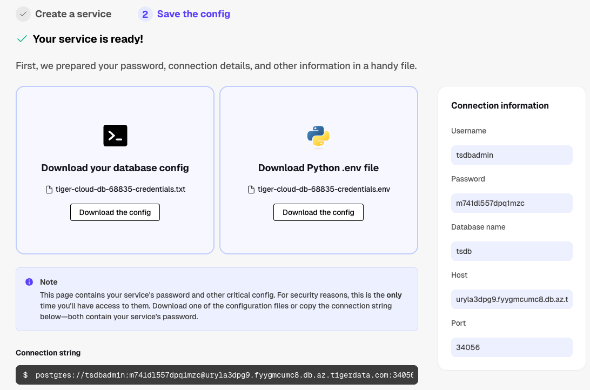
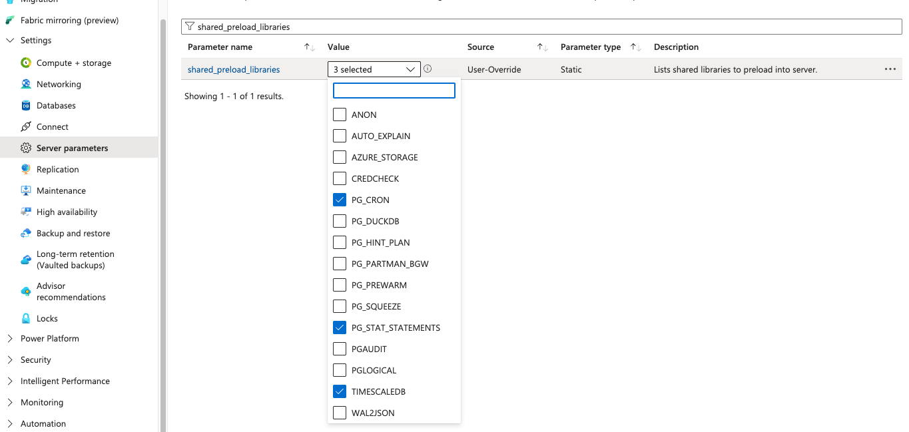
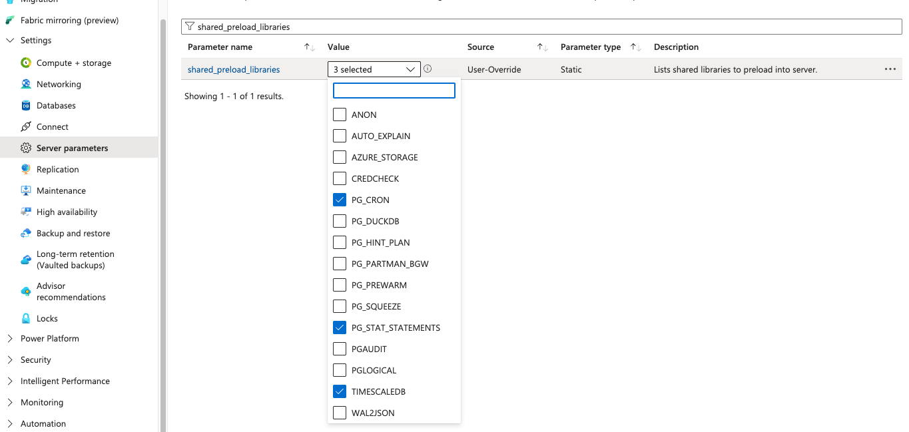

Introduction
As part of launching Tiger Cloud on Azure, we used RTABench to compare Tiger Cloud on Azure with Azure Database for Postgres, with and without the TimescaleDB extension enabled. RTABench is designed to showcase TimescaleDB, so we anticipated both Timescale variants would outperform vanilla Azure Database for Postgres. We sought to quantify the extent of the performance differences when run on Azure.
Summary
Tiger Cloud decisively dominated this benchmark, showing consistent millisecond latency across most queries. This is what we expected and this is why it is the ideal choice for Postgres-based analytic or hybrid database workloads in Azure. As anticipated, TimescaleDB also significantly outperformed vanilla Azure Managed Postgres on most queries, demonstrating the benefits of foundational capabilities such as hypertables.
The observed performance differences are substantial: Vanilla Azure Managed Postgres showed response times ranging from 7 seconds to 2 minutes for most queries. Enabling the TimescaleDB extension improved this to 1-5 seconds. In contrast, Tiger Cloud consistently delivered millisecond latency (4–6 milliseconds). This dramatic difference highlights the superior performance of Tiger Cloud.
The Numbers: Tiger Cloud Dominates
Tiger Cloud won decisively against Azure Database for Postgres, with and without the TimescaleDB Extension. It dramatically outperforms Azure TimescaleDB and Azure Managed Postgres, with speedups often in the range of 100x–1000x on analytical queries over time-series data.
On average, Tiger Cloud demonstrates:
- Median speedup: ~225x faster
- Mean speedup: ~1,450x faster
- Maximum speedup: ~7,200x faster (on Query Q7)
This superior performance is expected, as Tiger Cloud possesses significant architectural advantages for real-time analytics workloads, including columnar storage, vectorized execution, and optimized indexing strategies.
Of note:
- Complex Queries: Tiger Cloud dramatically outperforms on complex queries, with performance differences showing 100x–7000x faster execution for queries involving large scans, filtering, or aggregations over time-series data.
- Consistent Latency: Tiger Cloud consistently achieves sub-10ms response times across nearly all queries, while TimescaleDB's response times vary significantly, ranging from milliseconds up to 30+ seconds.
Benchmark Details: RTABench on Azure
RTABench is a real-time analytics benchmark designed to measure the ability of a transactional database to handle analytic queries, particularly those requiring joins and filtering over a normalized schema.
The benchmark dataset contains ~171 million events across 1,102 customers, 9,255 products, and 10,010,342 orders, providing a realistic, scalable application workload for testing query performance. RTABench is optimized to leverage TimescaleDB features like hypertables, compression, and columnar storage where available. The results clearly illustrate the performance benefits of Tiger Cloud over all other data infrastructure tested in Azure.
We ran RTABench on three different Postgres services on Azure:
- Tiger Cloud on Azure
- Azure Database for Postgres
- Azure Database for Postgres with the TimescaleDB extension enabled
Due to pre-release work on Tiger Cloud, the standard Terraform setup was replaced with a manual process. Minimal tweaks were made to the RTABench execution script to accept a Postgres connection string and to remove references to platform-unsupported features (e.g., hypertables on vanilla Postgres). These changes did not affect the benchmark's data, queries, or ingest logic. Details on the modified RTABench fork are available here.
The client host was a Standard_D2s_v3 instance running Linux (Ubuntu 24.04) with 2 vCPUs and 8GB RAM, deployed in the same Azure region (Western Europe) as the database systems. The disk was increased to 128GB to accommodate the dataset. Running the client host outside the database region would have a significant impact on load times.
We analyzed the results by feeding the benchmark output files to Claude, having a conversation, and double-checking that the conclusions were sound. The process was fun and quite insightful:
- Claude's analysis was enthusiastic about the Tiger Cloud results. The performance difference is dramatic. The visual aid to the right and below illustrates the scale difference we saw (in some queries, comparing milliseconds to minutes).
25% Through the Vanilla Bar
Still scrolling through this massive latency...
- Claude helped evaluate the validity of the benchmark output, eliminating the need to manually scan for problems, errors, or anomalies.
- Claude helped clarify initial confusion regarding the TimescaleDB version documented by Microsoft, confirming that the extension was properly enabled and that the public documentation was simply outdated.
Running RTABench
Now that Tiger Cloud is launched on Azure, you can run these benchmarks yourself and observe comparable results.
Tiger Cloud
- Sign up for Tiger Cloud and select a "Real-time analytics" service type.
- Spin up an 8 CPU 32GB dev service in Azure
Note the connection string or save the config:
- For a client host, start a Standard_D2s_v3 instance running Linux (ubuntu 24.04) with 2 vCPUs and 8GB RAM.
- Increase its disk size to accommodate the data set.
- On the client host, git clone this fork of RTABench. The fork tweaks the benchmark invocation scripts to accept a connection string for Postgres rather than spinning it up with Terraform.
- In the tigercloud-manual directory, edit benchmark.sh to provide your connection string.
- To run the benchmark in the background and correct for inconsistent network connections between your cafe and your client host, use nohup and make it a background process:
nohup ./benchmark.sh > benchmark_output.log 2>&1 &
When done, in addition to a verbose report, the output should contain query times measured in very few seconds. One line per query, each query runs three times.
50% There...
One minute down, one to go.
Azure Managed Postgres
Now that we have a Tiger Cloud baseline, let's compare it to Azure Managed Postgres. Presuming this is naive vanilla postgres, we don't have any timescale specific features such as hypertables, let alone continuous aggregates or vectorized storage. We use the postgres test in RTAbench for this.
- In the Azure portal, create an Azure Database for Postgres Flexible Servers instance in the same region as the client host, matching the compute and storage for the Tiger Cloud instance. It's expensive, so don't leave it running for a long time.
You can view the connection string from the Azure portal as well.
- On the client host, in the postgres-manual subdirectory:
- Edit benchmark.sh and provide the connection string
- Use nohup and make it a background process:
nohup ./benchmark.sh > benchmark_output.log 2>&1 &
After a while, your output should contain values measured in quite a few seconds.
TimescaleDB Extension
The TimescaleDB extension that's available with Azure Database for Postgres is the Apache 2 Licensed edition. It lacks row and columnar storage, native compression, and incremental continuous aggregates.
To enable the TimescaleDB extension on your Azure Database extension, click TIMESCALEDB on azure.extensions and shared_preload_libraries server settings:
 

- This will require a restart of postgres. That should take less than 5 minutes.
- In the timescale-manual directory, edit benchmark.sh and provide the connection string
- Use nohup and make it a background process:
nohup ./benchmark.sh > benchmark_output.log 2>&1 &
Examine the output. You may see errors around unsupported functions such as continuous aggregates. This is to be expected due to the limitations with Apache Licensed TimescaleDB.
75% Through
Tiger Cloud would have finished 15,000 times by now.
Resetting Postgres
Between tests, and if you need to restart due to an issue you can wipe Postgres clean as follows:
psql "$CONNECTION_STRING" -c "DROP SCHEMA public CASCADE;"
psql "$CONNECTION_STRING" -c "CREATE SCHEMA public;"
psql "$CONNECTION_STRING" -c "GRANT ALL ON SCHEMA public TO myuser;"
psql "$CONNECTION_STRING" -c "GRANT ALL ON SCHEMA public TO public;"
Raw Results
After following the steps above, we observed this performance:
| Query Profile | Tiger Cloud | Azure Managed Postgres + TimescaleDB | Vanilla Azure Managed Postgres |
|---|---|---|---|
| Most Queries | 4-6 ms | 1-5s | 7s-2m |
| Medium Complexity | 115-365ms | 1-30s | 500ms-15s* |
| High Complexity | 670ms-2.6s | 10-35s | 10-47s* |
| Incremental Materialized Views | 4-5ms | Unsupported | Unsupported |
Note: Vanilla PostgreSQL showed interesting patterns - it was much slower on pure time-series queries (Q1-Q3) but sometimes competitive or better than TimescaleDB (not Tiger Cloud) on complex multi-table joins (Q8, Q11, Q17, Q25-Q26, Q28). We suspect that this is due to Azure native query planner optimizations in Azure Database for Postgres. This is the kind of mysterious and unexpected variation you get when you choose to self-manage your data infrastructure.
Key Findings
- Tiger Cloud is fastest on 30 out of 31 queries
- TimescaleDB wins on 1 trivial query (Q15 - simple aggregation on products table)
- Vanilla PG wins on 0 queries
Average Performance Gains:
- Median speedup: ~225x faster on Tiger Cloud
- Mean speedup: ~1,450x faster on Tiger Cloud
- Maximum speedup: ~7,200x faster (Q7)
Detailed Query Performance Summary (seconds, median of 3 runs)
| Query | Tiger Cloud | TimescaleDB | Vanilla PG | Tiger vs TS | Tiger vs PG |
|---|---|---|---|---|---|
| Q1 | 0.005 | 2.46 | 112.03 | 492x | 22,406x |
| Q2 | 0.005 | 1.78 | 45.50 | 356x | 9,100x |
| Q3 | 0.005 | 1.34 | 7.61 | 268x | 1,522x |
| Q4 | 0.005 | 0.012 | 0.48 | 2.4x | 96x |
| Q5 | 0.005 | 3.63 | 17.83 | 726x | 3,566x |
| Q6 | 0.005 | 11.47 | 10.05 | 2,294x | 2,010x |
| Q7 | 0.005 | 36.26 | 7.85 | 7,252x | 1,570x |
| Q8 | 0.002 | 34.34 | 1.58 | 17,170x | 790x |
| Q9 | 0.005 | 0.97 | 9.31 | 194x | 1,862x |
| Q10 | 0.005 | 1.17 | 1.07 | 234x | 214x |
| Q11 | 0.005 | 15.38 | 1.22 | 3,076x | 244x |
| Q12 | 0.005 | 0.018 | 6.00 | 3.6x | 1,200x |
| Q13 | 0.005 | 30.58 | 5.84 | 6,116x | 1,168x |
| Q14 | 0.005 | 31.45 | 6.40 | 6,290x | 1,280x |
| Q15 | 0.006 | 0.004 | 2.19 | 0.67x | 365x |
| Q16 | 0.005 | 0.025 | 4.46 | 5x | 892x |
| Q17 | 0.286 | 1.34 | 0.73 | 4.7x | 2.6x |
| Q18 | 0.005 | 25.82 | 41.78 | 5,164x | 8,356x |
| Q19 | 2.61 | 26.24 | 15.19 | 10x | 5.8x |
| Q20 | 0.341 | 30.86 | 4.91 | 90x | 14.4x |
| Q21 | 0.116 | 27.63 | 47.09 | 238x | 406x |
| Q22 | 2.65 | 26.40 | 14.68 | 10x | 5.5x |
| Q23 | 1.04 | 2.31 | 1.29 | 2.2x | 1.2x |
| Q24 | 0.005 | 22.74 | 40.50 | 4,548x | 8,100x |
| Q25 | 0.365 | 1.56 | 0.80 | 4.3x | 2.2x |
| Q26 | 0.006 | 0.340 | 39.03 | 57x | 6,505x |
| Q27 | 0.671 | 1.81 | 1.16 | 2.7x | 1.7x |
| Q28 | 0.006 | 1.69 | 39.16 | 282x | 6,527x |
| Q29 | 0.710 | 3.38 | 1.72 | 4.8x | 2.4x |
| Q30 | 0.176 | 0.535 | 0.82 | 3x | 4.7x |
| Q31 | 0.175 | 17.07 | 10.71 | 97x | 61x |
Conclusion
Aside: Azure Data Explorer
Microsoft often recommends Azure Data Explorer for time-series workloads because of its rich user experience and its specific optimization for high-volume, timestamped data. We didn't run that benchmark at this time because RTABench doesn't yet support Kusto Query Language (AQL). Although the non-standard query language is a pretty compelling reason to keep all your workloads, including time-series, in Postgres, we're pretty curious about how it would perform and hope to add support for it in the future.
This benchmark illustrates it and you can try it yourself. If you've been held back by slow queries, storage tradeoffs, or the limitations of the Apache 2 Edition on Azure Database for PostgreSQL, the combination of functionality is compelling:
- Postgres you already know
- Full TimescaleDB feature set
- Azure-native deployment and billing
Resources:
- Azure documentation
- Get started on Azure Marketplace
- Questions or want to discuss your architecture? [Talk to solutions team]